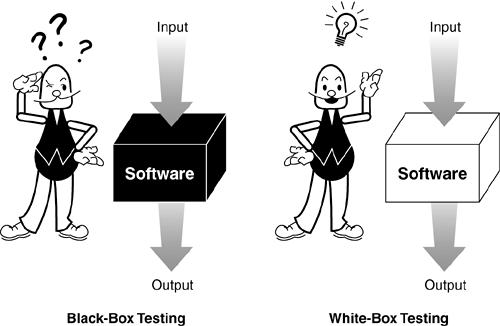

External connectors (DB, search servers, web services etc.)
Application in detail
What the client cares about?
Overall performance
End user experience
Site builder experience
Sanity check: administrative permissions
As a site editor
I can use administrative pages.
As anonymous user or user without site editing permissions
I get access denied when attempting to enter administrative pages.

Sanity check: administrative permissions
As a site editor
I can use administrative pages.
As anonymous user or user without site editing permissions
I get access denied when attempting to enter administrative pages.
Behat solution:
1. Go to /admin as anonymous user
2. Check that application returns 'access denied'
3. Login as site editor
4. Check that application returns administration page
Sanity check: shield protection
On development server
As anonymous user
I am prompted to enter HTTP authentication credentials on development server.
Behat solution:
1. Go to / as anonymous user
2. Check that application returns 'authentication required'
Client issue: new feature
As a site editor or site administrator.
When I create a new node, I can use WYSIWYG editor for body field.
I can switch WYSIWYG on and off.
Behat solution:
1. Login is site editor
2. Go to /node/add/page
3. Check that page contains WYSIWYG editor
Client issue: bug
News page is empty
Behat solution:
1. Go to /news as anonymous user
2. Check that there are news.
Client issue: bug
News page is empty again!
Lessons learned?
Prevent this forever!
Behat solution:
1. Call web service API
2. Check the structure of response to see if it contains the right fields.
It is possible, but...
we need to extend Behat context
not exactly the use case, as we do know the application
slow, as it relies on actual news feed (stored in DB?)
Prevent this forever!
PHPUnit:
1. Instantiate news source class
2. Feed it with fake news
3. Check the response structure
 https://www.facebook.com/bulgaria.dug/
https://www.facebook.com/bulgaria.dug/